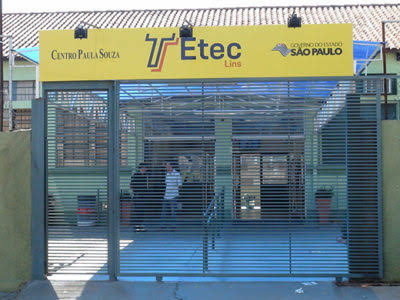

Coordenação
Beatriz
Coordenadora, colabora nas atividades e toma conta da secretária.
Livia
Coordenadora, colabora nas documentações e desenvolvimento escolar.
Etec Lins

O que é a ETEC? Quais são as vantagens?
Quais são as vantagens da ETEC?
O processo seletivo da ETEC é similar a um vestibular, recebendo o nome de “vestibulinho”. Para acessá-lo, é preciso acompanhar os períodos de inscrição nos cursos pelo site, que geralmente tem início nos meses próximos ao semestre em que as aulas terão início.
Realizar o ensino médio junto do ensino técnico
Um grande benefício é a possibilidade de realizar o curso técnico durante o colégio. Em geral, as matrículas estão abertas a partir do segundo ano, mas também é possível realizar a modalidade de ensino médio com habilitação profissional, que une as duas formações em um único curso.
Ter acesso a várias opções de curso
Uma das vantagens da prova é a diversidade de disciplinas que podem ser escolhidas pelo aluno, contemplando as principais áreas de conhecimento. Não à toa, é muito comum que as pessoas certificadas pela ETEC continuem os estudos posteriormente, optando por fazer uma faculdade no segmento em que já tem alguma experiência.
Receber mais que o profissional de nível médio
O certificado de curso técnico permite trabalhar em segmentos mais específicos e menos concorridos em relação às vagas de nível médio. Assim, o salário fica geralmente acima das funções de auxiliar e abaixo das de nível superior.
Um exemplo é o das vagas em Administração. O técnico em administração recebe em média R$ 2.407,28, enquanto o auxiliar fica na faixa dos R$1.465,37. Já o profissional de nível superior tem os vencimentos médios em R$ 4.591,74, conforme dados do Portal Salário, que avalia os números do CAGED do Ministério do Trabalho.
Ingressar rapidamente no mercado
Os cursos técnicos geralmente duram até 2 anos. Assim, as pessoas procuram a ETEC com a perspectiva de ingressar rapidamente no mercado de trabalho ou como uma espécie de etapa anterior à graduação. No entanto, como veremos a seguir, entre os tipos de graduação, também existem formações para satisfazer a essa demanda profissional e com vantagens para o concluinte.